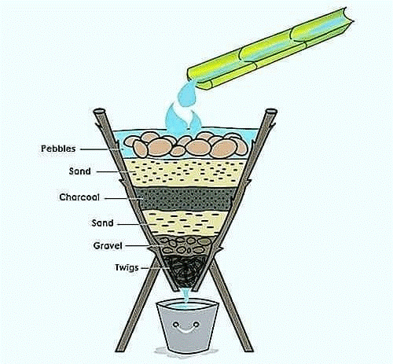
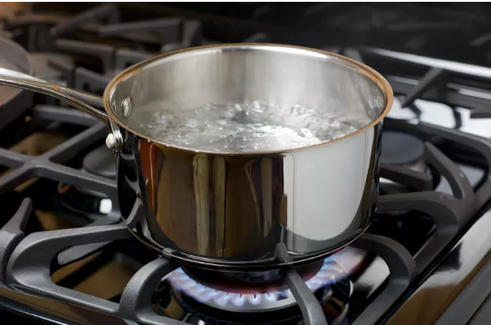
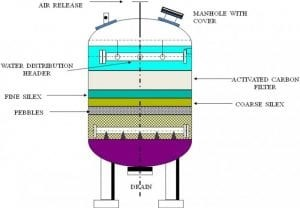
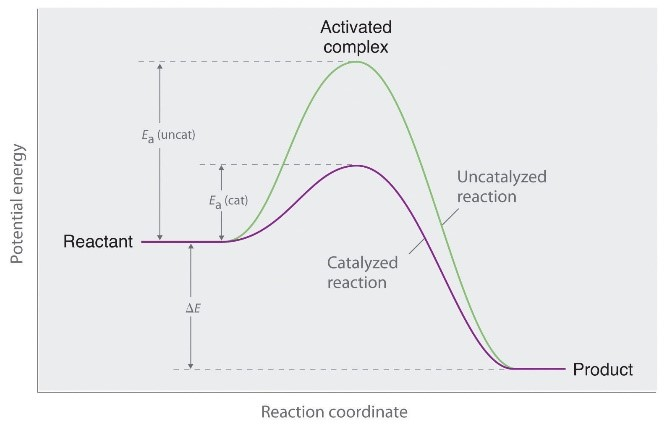

Water conservation is important for in order for the planet to sustain its ecosystem and to ensure the continuous accessibility of clean water until future. As worldwide freshwater use has expanded nearly six-fold since 1900, the demand on this critical resource has intensified, leading to substantial water stress in diverse places (Ritchie & Roser, 2024). The largest user of water, the agriculture sector is responsible for a significant number of freshwater withdrawals globally. Effective water management techniques, like drip irrigation, are important for lowering consumption and lessening the negative effects of climate change and droughts on food security.
Additionally, there have been variations in the amount of water used in households; for example, during the COVID-19 pandemic, there was a rise in the amount used because more people were staying at home. This emphasizes how important it is to adopt water-saving practices into daily life and to raise public awareness of them. We can save the energy used for water distribution and treatment, save aquatic habitats, and cut expenses associated with water supply by encouraging conservation initiatives.
Role of Chemistry in Addressing Water-Related ChallengesChemistry is essential for solving many problems pertaining to water. In order to ensure safe drinking water, it is helpful to understand the composition and quality of the water. Water treatment plants use chemical procedures to clean water sources of pollutants and pathogens. For example, improved oxidation processes can degrade dangerous substances, and chlorination is a common approach used to clean drinking water (Hancock, 2023).
Moreover, chemistry helps in the development of creative wastewater treatment and recycling solutions, according to US EPA (2024). By recovering valuable materials from wastewater, processes like chemical precipitation and membrane filtering lower the overall water demand. Moreover, knowledge of the chemical interactions in natural waters can help manage ecosystems and minimize pollution.
Overview of Water Usage in Households and IndustriesThere are big differences in the amount of water used in homes and businesses. The average American family uses about 300 gallons (approximately 1,136 liters) of water per day in their home, with about 70% with the majority of this use taking place indoors. Bathing, cooking, cleaning, and outside irrigation are typical household tasks that utilize a lot of water (US EPA, 2024)
In contrast, industrial water use tends to be substantially higher overall. The need for cooling, processing, and cleaning products makes the manufacturing sector a significant consumer. Water is also important for energy production since it decreases thermal power plant cooling systems. According to Ritchie and Roser (2024), agriculture is the largest single user of freshwater globally; it requires massive amounts for irrigation and animal management.
A summary of typical water usage across sectors is as follows:
| Sector | Typical Usage Description |
| Households | Average 300 gallons/day; primarily indoor use |
| Agriculture | Largest consumer; significant irrigation needs |
| Manufacturing | High volume for cooling and processing |
| Energy | Essential for cooling in thermal power generation |
CHEMICAL REACTIONS FOR WATER CONSERVATION
Chemical Reactions That Help Save WaterWater conservation is becoming more and more important in many industrial processes, and there are ways to optimize chemical reactions such that they consume less water. Here are a example of these reactions:
- Enzymatic Reactions
- Dehydration Synthesis
- Hydrolysis
Enzymes can accelerate chemical reactions, which reduces the time and water needed for processes such as dyeing in the textile industry. By enhancing dye absorption, enzymes shorten dyeing cycles, leading to significant water savings.
In fruit juice production, enzymes help extract juice more efficiently, minimizing the water required during juicing
This reaction involves the formation of larger molecules from smaller ones by removing water. For instance, when forming polysaccharides from monosaccharides, water is released as a byproduct, thus conserving water in the overall process.
While hydrolysis typically uses water to break down compounds, optimizing this reaction can lead to less overall water usage by ensuring that only the necessary amount is utilized for effective breakdown, especially in biological systems.
- Faster Reaction Times
- Closed-Loop Systems
- Alternative Solvents
Utilizing catalysts or enzymes can significantly decrease the duration of chemical reactions. Shorter reaction times mean less water is needed for cooling and dilution during processes like fermentation or chemical synthesis
Implementing closed-loop systems in industries can recycle water used in chemical reactions. This method ensures that water is reused rather than discarded, reducing overall consumption.
Research into using solvents other than water for certain chemical reactions can also save water. For example, ionic liquids or supercritical fluids may serve as effective alternatives while minimizing water usage.
WASTEWATER TREATMENT PROCESSES
Wastewater treatment is a critical process that ensures water used in homes and industries is cleaned before being released back into the environment. This process involves several stages designed to remove contaminants and pollutants, making the water safe for discharge or reuse.
Water treatment is an important process because it guarantees that water used in residences and businesses is cleansed before being discharged back into the environment. This procedure consists of multiple steps intended for removing toxins and pollutants, ensuring the water is safe for release or repurposing.
What Happens to Water After We Use It?- Collection: Used water, or wastewater, is collected from various sources, including households, industries, and stormwater systems.
- Pre-Treatment: In this initial stage, large debris such as plastics, rags, and other solid materials are removed using screens and grit chambers to prevent damage to equipment.
- Primary Treatment: The wastewater is then allowed to settle in large tanks where heavier solids sink to the bottom, forming sludge. This sludge is removed for further processing, while the liquid portion moves on to the next stage.
- Secondary Treatment: This stage involves biological processes where microorganisms break down organic matter in the presence of oxygen. Aeration tanks facilitate this process by supplying oxygen, promoting the growth of bacteria that consume pollutants.
- Tertiary Treatment: Advanced treatment methods are employed to further purify the water. This may include filtration and disinfection processes such as chlorination or ultraviolet light treatment to eliminate any remaining pathogens. How Chemicals Help Clean Wastewater?
- Neutralization: Adjusting pH levels by adding acids or bases to ensure optimal conditions for bacterial activity.
- Phosphate Removal: Chemicals can precipitate phosphates from wastewater to prevent environmental issues like algal blooms when treated water is discharged into natural bodies.
- Disinfection: Chlorine or ozone is often used to kill harmful bacteria and viruses before the treated water is released or reused.
- Filtration: Using layers of sand, gravel, and charcoal can effectively filter out larger particles and some contaminants from dirty water. 
- Boiling: Heating water to a rolling boil for at least one minute can kill most pathogens present in the water. 
- Solar Disinfection (SODIS): Placing clear plastic bottles filled with water in direct sunlight for several hours can utilize UV rays to disinfect the water.
- • Activated Carbon Filters: These filters can remove chlorine, sediment, volatile organic compounds (VOCs), and bad tastes from drinking water. 
Chemicals play a vital role in wastewater treatment by:
These chemical processes are essential for meeting regulatory standards and ensuring that treated water is safe for discharge into the environment or for reuse.
Ways We Can Treat Water at HomeHomeowners can implement basic methods to treat water, especially in emergencies or for gardening purposes:
Image from: https://www.reddit.com/r/coolguides/comments/vq6ppy/traditional_way_to_purify_water/
Image from: Getty Images

Image from: Wikipedia
Image from: American water chemicals
Implementing these simple methods can help improve water quality at home while contributing to overall environmental sustainability.
USING CATALYST TO SAVE WATER IN CHEMICAL REACTIONS
What is a Catalyst?A substance that speeds up a chemical reaction without getting consumed in the process is called a catalyst. This is accomplished by reducing the activation energy, which is the minimum amount of energy required for a reaction to take place (Lerner, 2011). Catalysts allow reactions to proceed more effectively and frequently under milder conditions than would otherwise be possible by facilitating the breaking and formation of chemical bonds.
How Catalysts Speed Up Reactions and Help Save Water?Catalysts plays an important role in making chemical processes more efficient, particularly in terms of water usage.
- Use of Water as a Medium: Traditional organic synthesis often relies on organic solvents, which can be environmentally harmful. Catalysts enable reactions to occur in water, reducing the need for these solvents. This shift not only minimizes waste but also simplifies the separation processes after reactions.
- Faster Reactions: By lowering the activation energy, catalysts increase reaction rates. This means that reactions can occur more quickly, which can reduce the time water is needed in processes like washing or cleaning.
- Selective Reactions: Catalysts can direct reactions toward desired products while minimizing byproducts. This selectivity helps optimize resource use, including water, by reducing unnecessary steps or additional washings needed to purify products.
Example: Using a Catalyst to Clean Water Faster
Catalysts can improve the effectiveness of chemical reactions used in water treatment systems to break down contaminants. For example, utilizing a heterogeneous catalyst can speed up the process of breaking down pollutants in water compared to using traditional techniques. As a result, purification cycles go more quickly and there is less water wasted overall.
GREEN CHEMISTRY AND ITS ROLE IN WATER CONSERVATION
What is Green Chemistry?A scientific method known as "green chemistry" aims to create chemical products and processes with as little or no usage of dangerous materials as possible. It includes a set of guidelines aimed at lessening the negative effects on the environment, improving safety, and advancing sustainability in the production and use of chemicals. Green chemistry makes a substantial contribution to preserving water resources and preserving water quality by stopping pollution at its source.
Green chemistry is the design of chemical products and processes that reduce or eliminate the use or generation of hazardous substances. Green chemistry applies across the life cycle of a chemical product, including its design, manufacture, use, and ultimate disposal.
How Does Green Chemistry Help Save Water?Green chemistry aids in water conservation through various mechanisms:
- Reduction of Water Usage: Many green chemistry processes are designed to require less water than traditional methods. For instance, supercritical CO₂ cleaning technologies can replace water in cleaning applications, saving millions of gallons daily.
- Minimization of Contaminants: By using safer chemicals and processes, green chemistry reduces the release of harmful substances into water systems, thus improving overall water quality.
- Sustainable Water Treatment: Green chemistry approaches to water purification involve biological agents and eco-friendly technologies that are more efficient than conventional methods. This reduces the need for extensive water treatment processes that consume large amounts of water.
- Eco-Friendly Cleaning Products: Many cleaning products now use less water in their formulations or utilize supercritical CO₂ instead of traditional solvents.
- Water-Based Paints and Coatings: These products replace solvent-based formulations, significantly reducing the amount of volatile organic compounds (VOCs) released into the environment.
- Biodegradable Detergents: These detergents are designed to break down more quickly in the environment, reducing pollution and conserving water during washing processes.
References
Basics of Green Chemistry | US EPA. (2024, May 2). US EPA. https://www.epa.gov/greenchemistry/basics-green-chemistry
Everflow - Which industries use the most water and why. (n.d.-b). https://everflowutilities.com/blogs/which-industries-use-the-most-water-and-why
Hancock, N. (2023b, September 16). Water consumption — Safe drinking water foundation. Safe Drinking Water Foundation. https://www.safewater.org/fact-sheets-1/2017/1/23/water-consumption
Hjeresen, D. J. (2004). Green chemistry: the impact on water quality and supplies. Water and Sustainable Development - NCBI Bookshelf. https://www.ncbi.nlm.nih.gov/books/NBK83730/
How we use water | US EPA. (2024, September 12). US EPA. https://www.epa.gov/watersense/how-we-use-water
Kitanosono, T., Masuda, K., Xu, P., & Kobayashi, S. (2017). Catalytic Organic Reactions in Water toward Sustainable Society. Chemical Reviews, 118(2), 679–746. https://doi.org/10.1021/acs.chemrev.7b00417
Libretexts. (2023, July 7). 14.7: Catalysis. Chemistry LibreTexts. https://chem.libretexts.org/Bookshelves/General_Chemistry/Map:_Chemistry_-_The_Central_Science_(Brown_et_al.)/14:_Chemical_Kinetics/14.07:_Catalysis
Louise Lerner. (2011). 7 things you may not know about catalysis. Argonne National Library. https://www.anl.gov/article/7-things-you-may-not-know-about-catalysis
Lumen Learning & OpenStax. (n.d.). Water | BIO103: Human Biology. https://courses.lumenlearning.com/suny-dutchess-ap1/chapter/water-2/
Netherlands, S. (2022b, March 22). Households used more water in 2020, companies less. Statistics Netherlands. https://www.cbs.nl/en-gb/news/2022/12/households-used-more-water-in-2020-companies-less
Peake, B. M., Braund, R., Tong, A. Y., & Tremblay, L. A. (2016). Green chemistry, green pharmacy, and life-cycle assessments. In Elsevier eBooks (pp. 229–242). https://doi.org/10.1016/b978-1-907568-25-1.00008-6
Ritchie, H., & Roser, M. (2024b, February 27). Water use and stress. Our World in Data. https://ourworldindata.org/water-use-stress
The basic processes of waste water treatment. (n.d.). Aerzen Relaunch. https://www.aerzen.com/applications/water-and-waste-water-treatment/adviser/processes-of-waste-water-treatment
The Wastewater Treatment Process. (n.d.). Cole-Parmer. https://www.coleparmer.com/tech-article/eight-stages-of-wastewater-treatment-process
Wastewater treatment process. (2024, September 20). https://www.gustawater.com/blog/wastewater-treatment-process.html
Zymvol. (2024b, May 24). 3 Ways Enzymes are Saving Water Everyday | ZYMVOL. Zymvol. https://zymvol.com/2024/05/27/3-ways-enzymes-are-saving-water-everyday/